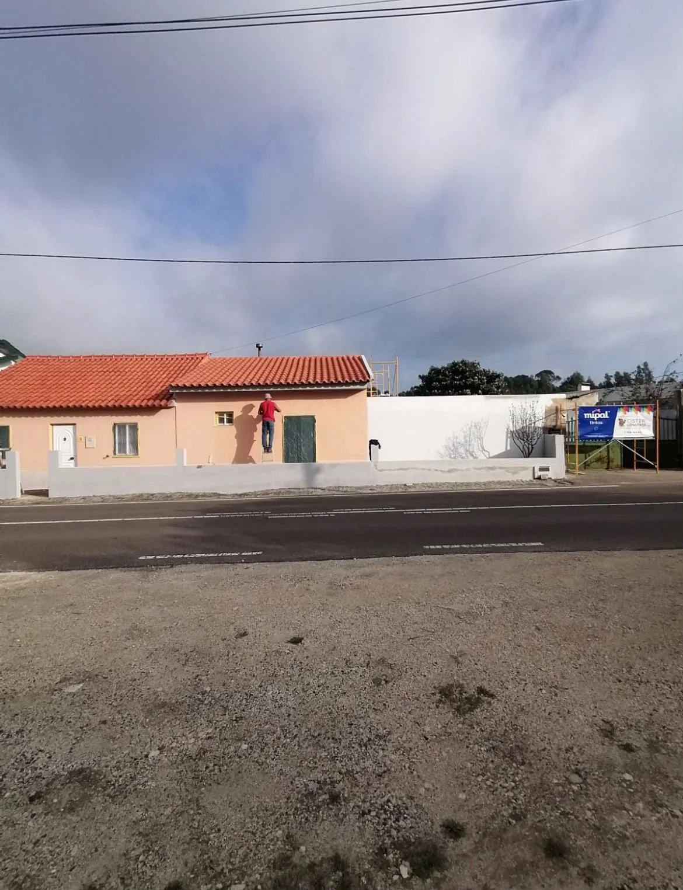
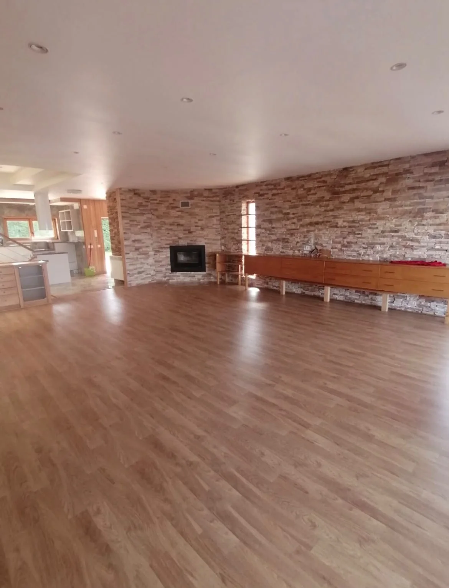
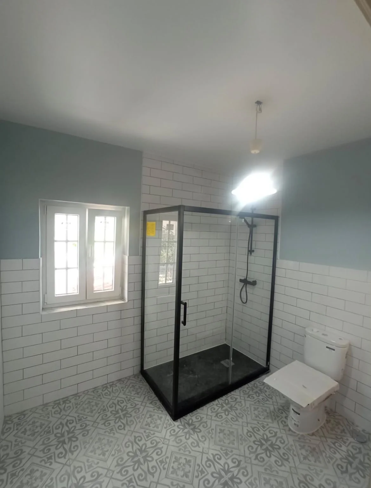
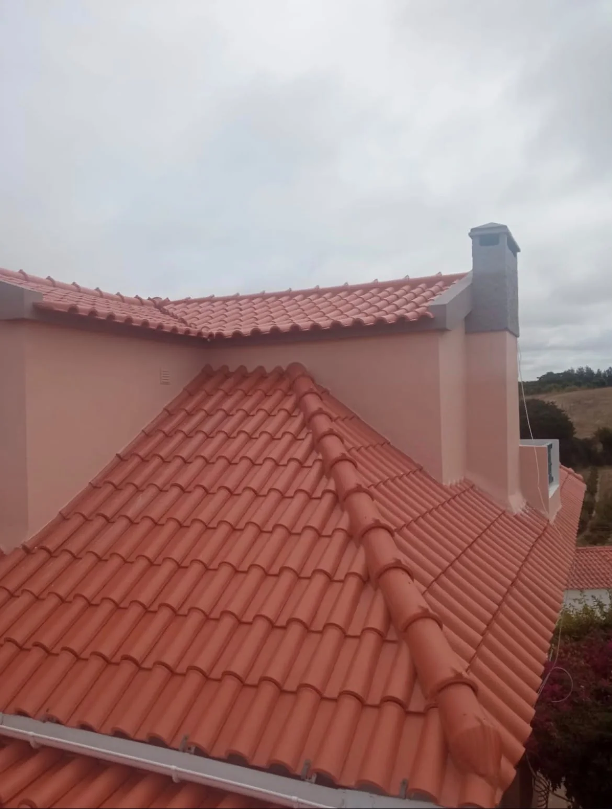
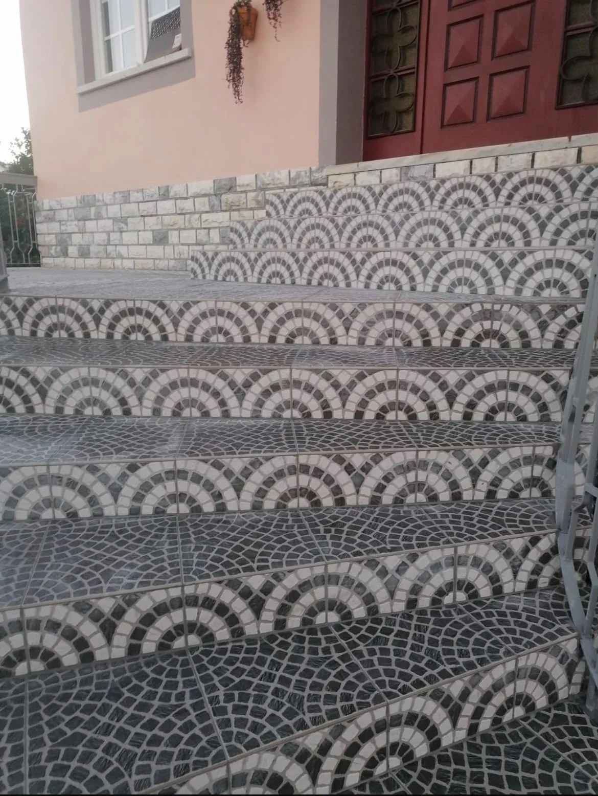
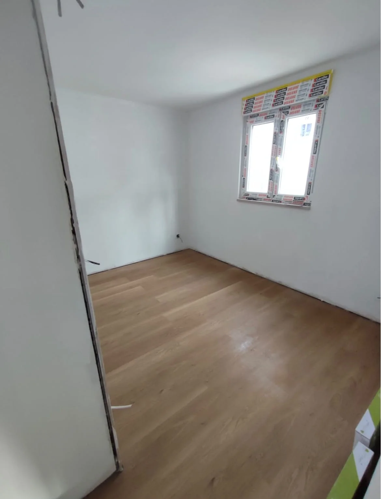

01
Construção de moradias
Projetos habitacionais e trabalhos de construção civil, com foco na solidez e na utilização dos espaços.

Conheça os nossos serviços e uma seleção de fotografias de construção civil e remodelações.
Da construção de edifícios à renovação de interiores, os trabalhos variam consoante as necessidades de cada espaço.
A Cisterconstrói — Construções e Remodelações, Unipessoal Lda tem sede em Alcobaça e exerce atividade na área da construção de edifícios e das remodelações. Nesta página pode consultar as áreas de trabalho apresentadas e entrar em contacto para colocar questões sobre uma obra.
Conheça as nossas áreas de atuação
Construção, remodelações, coberturas e acabamentos. Contacte-nos para confirmar a disponibilidade para o seu trabalho.
Projetos habitacionais e trabalhos de construção civil, com foco na solidez e na utilização dos espaços.
Transformação de divisões e reorganização de ambientes para responder a novas necessidades.

03Renovação de áreas essenciais com atenção aos materiais, à praticidade e aos pormenores.

04Intervenções orientadas para a proteção dos edifícios e o seu desempenho ao longo do tempo.

05Materiais e acabamentos que ajudam a definir a personalidade de cada espaço.

06Acabamentos interiores e exteriores para dar unidade e uma nova vida aos ambientes.
Imagens disponibilizadas para este portefólio, organizadas por tipo de espaço e de intervenção.
Fotografias cedidas para apresentação neste website. A autoria e a associação de cada imagem a trabalhos executados pela empresa carecem de confirmação.
Um bom resultado está na combinação entre planeamento, escolha de soluções adequadas e cuidado na execução.
Vamos falar do seu projetoEtapas habituais de um pedido de informação ou orçamento, sujeitas à natureza de cada intervenção.
Conte-nos o que tem em mente e partilhe as principais necessidades.
Perceber os objetivos, as características da obra e as possibilidades.
Definir as soluções e os trabalhos previstos antes de avançar.
Dar forma ao projeto, com acompanhamento das diferentes etapas.
Tem uma ideia para construir ou renovar? O primeiro passo é uma boa conversa.
Pedir orçamentoPara esclarecer dúvidas ou solicitar informações sobre uma obra, utilize os contactos indicados.
Alcobaça e zona envolvente — mediante disponibilidade.
O formulário prepara uma mensagem no WhatsApp. Antes de enviar, confirme o destinatário e o conteúdo na aplicação.